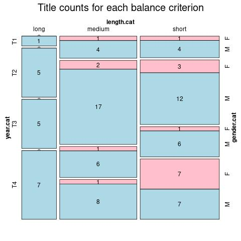

Click on a column heading to sort. Click on a text identifier to read the text (may not work in older browsers).
| Identifier | Encoding | Pages | Words | (Size) | Date (Slot) | Title | Author | Sex | Reprints |
|---|---|---|---|---|---|---|---|---|---|
| POR0001 | eltec-1 | 145767 | (long) | 1868 (T2) | A Morgadinha dos Cannaviaes | Dinis, Júlio (1839-1871) | M | ||
| POR0002 | eltec-1 | 17161 | (short) | 1908 (T4) | Sacrificada | Castro Osório, Ana de (1839-1871) | F | ||
| POR0004 | eltec-1 | 71843 | (medium) | 1846 (T1) | Viagens na minha terra | Almeida Garrett, João Baptista da Silva Leitão de (1799 — 1854) | M | ||
| POR0005 | eltec-1 | 216330 | (long) | 1888 (T3) | Os Maias | Eça de Queirós, José Maria de (1845 — 1900) | M | ||
| POR0006 | eltec-1 | 51316 | (medium) | 1855 (T1) | O Cura de São Lourenço | Vasconcelos, M.M.S.A. e (?-1893) | F | ||
| POR0007 | eltec-1 | 124362 | (long) | 1868 (T2) | Uma família ingleza | Dinis, Júlio (1839-1871) | M | ||
| POR0008 | eltec-1 | 122198 | (long) | 1878 (T2) | O Primo Basílio | Eça de Queirós, José Maria de (1845 — 1900) | M | ||
| POR0009 | eltec-1 | 142413 | (long) | 1875 (T3) | O Crime do Padre Amaro | Eça de Queirós, José Maria de (1845 — 1900) | M | ||
| POR0010 | eltec-1 | 50213 | (medium) | 1862 (T2) | Amor de Perdição | Castelo Branco, Camilo (1825 — 1890) | M | ||
| POR0011 | eltec-1 | 41465 | (short) | 1858 (T1) | O que fazem mulheres | Castelo Branco, Camilo (1825 — 1890) | M | ||
| POR0012 | eltec-1 | 59934 | (medium) | 1872 (T2) | Livro de consolação | Castelo Branco, Camilo (1825 — 1890) | M | ||
| POR0013 | eltec-1 | 40352 | (short) | 1906 (T4) | Os pobres | Brandão, Raul (1867 — 1930) | M | ||
| POR0014 | eltec-1 | 49151 | (short) | 1906 (T4) | Os Bravos do Mindelo | Fonseca, Faustino da (1871-1918) | M | ||
| POR0015 | eltec-1 | 146137 | (long) | 1867 (T2) | Os Fidalgos da Casa Mourisca | Dinis, Júlio (1839-1871) | M | ||
| POR0016 | eltec-1 | 175 | 92280 | (medium) | 1908 (T4) | A casa dos fantasmas | Silva, Luís Augusto Rebelo da (1822-1871) | M | |
| POR0017 | eltec-1 | 208 | 48999 | (short) | 1874 (T4) | A Lenda da Meia-Noite | Chagas, Manuel Joaquim Pinheiro (1842-1895) | M | |
| POR0018 | eltec-1 | 13227 | (short) | 1917 (T3) | A engomadeira | Almada Negreiros, José Sobral (1893-1970) | M | ||
| POR0019 | eltec-1 | 26391 | (short) | 1914 (T4) | A Confissão de Lúcio | Sá-Carneiro, Mário de (1890-1916) | M | ||
| POR0020 | eltec-1 | 80661 | (medium) | 1917 (T4) | Amor crioulo | Botelho, Abel (1854-1917) | M | ||
| POR0021 | eltec-1 | 26429 | (short) | 1888 (T3) | Uma Eleição Perdida | Francisco Manuel de Melo Breyner, Conde de Ficalho (1837-1903) | M | ||
| POR0022 | eltec-1 | 31778 | (short) | 1892 (T3) | Noites de Cintra | Pimentel, Alberto (1849-1925) | M | ||
| POR0023 | eltec-1 | 58257 | (medium) | 1844 (T1) | Eurico, o Presbytero | Herculano, Alexandre (1810-1877) | M | ||
| POR0024 | eltec-1 | 27681 | (short) | 1873 (T2) | A filha do Cabinda | Campos, Alfredo (1847-1906) | M | ||
| POR0025 | eltec-1 | 59170 | (medium) | 1870 (T2) | A Rosa do Adro | Rodrigues, Manuel Maria (1847-1899) | M | ||
| POR0026 | eltec-1 | 110206 | (long) | 1883 (T3) | O Salústio Nogueira | Queirós, Teixeira de (1848-1919) | M | ||
| POR0027 | eltec-1 | 58236 | (medium) | 1873 (T2) | Um conto portuguez | Mascarenhas, Miguel J. T. (?) | M | ||
| POR0028 | eltec-1 | 26305 | (short) | 1875 (T2) | A senhora viscondessa | Lima, Sebastião de Magalhães (1850-1928) | M | ||
| POR0029 | eltec-1 | 25603 | (short) | 1876 (T2) | O Christão novo | Macedo, Diogo de (?) | M | ||
| POR0030 | eltec-1 | 47982 | (short) | 1861 (T2) | A chave do enigma | Castilho, António Feliciano de (1800-1875) | M | ||
| POR0031 | eltec-1 | 51406 | (medium) | 1897 (T3) | Pero da Covilhan | Brandão, Zeferino Norberto Gonçalves (1842-1910) | M | ||
| POR0032 | eltec-1 | 76520 | (medium) | 1899 (T3) | Transviado | Lima, Jayme de Magalhães (1859-1936) | M | ||
| POR0033 | eltec-1 | 121709 | (long) | 1904 (T4) | Os filhos do padre Anselmo | Albergaria, António da Costa Couto Sá de (1850-1921) | M | ||
| POR0034 | eltec-1 | 54838 | (medium) | 1903 1874 (T2) | O Conde de S. Luiz | Melo, Tomaz de (1836-1905) | M | ||
| POR0035 | eltec-1 | 42511 | (short) | 1900 (T4) | O Exilado | Fonseca, Mauricia C. da (?-?) | F | ||
| POR0036 | eltec-1 | 50744 | (medium) | (T4) | A Divorciada | Vieira, José Augusto (1856-1890) | M | ||
| POR0037 | eltec-1 | 238762 | (long) | 1905 (T4) | A Ala dos Namorados | Campos Junior, António (1850-1917) | M | ||
| POR0038 | eltec-1 | 60723 | (medium) | 1843 (T1) | O Bobo | Herculano, Alexandre (1810-1877) | M | ||
| POR0039 | eltec-1 | 8266 | (short) | 1888 (T3) | O Engeitado | Braga, Alberto Alberto Leal Barradas Monteiro (1851-1911) | M | ||
| POR0040 | eltec-1 | 38173 | (short) | 1857 (T1) | Os tripeiros | Lousada, António José Coelho (1828-1859) | M | ||
| POR0041 | eltec-1 | 62282 | (medium) | 1916 (T4) | A morte vence | Grave, João José (1872-1934) | M | ||
| POR0042 | eltec-1 | 61549 | (medium) | 1904 (T4) | Viriato | Braga, Teófilo (1843 — 1924) | M | ||
| POR0043 | eltec-1 | 39730 | (short) | 1886 (T3) | O Brasileiro Soares | Magalhães, Luís de (1859-1935) | M | ||
| POR0044 | eltec-1 | 14542 | (short) | 1877 (T2) | Alice | Carvalho, Maria Amália Vaz de (1847-1921) | F | ||
| POR0045 | eltec-1 | 85383 | (medium) | 1870 (T2) | A ermida de Castromino | Vasconcellos, Antonio Augusto Teixeira de (1816-1878) | M | ||
| POR0046 | eltec-1 | 54747 | (medium) | 1875 (T2) | Os selvagens | Amorim, Francisco Gomes de (1827-1891) | M | ||
| POR0047 | eltec-1 | 56765 | (medium) | 1862 (T2) | Infaustas Aventuras de Mestre Marçal Estouro | Leal, José da Silva Mendes (1818-1886) | M | ||
| POR0048 | eltec-1 | 12499 | (short) | 1864 (T2) | A pálida estrela | Bulhão Pato, Raimundo António de (1828-1912) | M | ||
| POR0049 | eltec-1 | 72321 | (medium) | 1891 (T3) | O último cartuxo da Scala Caeli de Évora | Barata, António Francisco (1836-1910) | M | ||
| POR0050 | eltec-1 | 79722 | (medium) | 1866 (T2) | A conquista de Lisboa | Almeida, Carlos Pinto de (1831 — 1899) | M | ||
| POR0051 | eltec-1 | 65400 | (medium) | 1917 (T4) | Húmus | Brandão, Raul (1867 - 1930) | M | ||
| POR0052 | eltec-1 | 43817 | (short) | 1903 (T4) | A Farsa | Brandão, Raul (1867 - 1930) | M | ||
| POR0053 | eltec-1 | 106373 | (long) | 1891 (T3) | O Barão de Lavos | Botelho, Abel (1854-1917) | M | ||
| POR0054 | eltec-1 | 137087 | (long) | 1901 (T4) | Amanhã | Botelho, Abel (1854-1917) | M | ||
| POR0055 | eltec-1 | 55076 | (medium) | 1904 (T4) | O Annel Mysterioso | Pimentel, Alberto (1849-1925) | M | ||
| POR0056 | eltec-1 | 20683 | (short) | 1892 (T3) | O Dr. Luiz Sandoval | Moderno, Alice (1867-1946) | F | ||
| POR0057 | eltec-1 | 24147 | (short) | 1881 (T3) | A ruiva | Almeida, Fialho de (1857-1911) | M | ||
| POR0058 | eltec-1 | 12953 | (short) | 1879 (T2) | O Romance da Rainha Mercedes | Pimentel, Alberto (1849-1925) | M | ||
| POR0059 | eltec-1 | 49815 | (short) | 1875 (T3) | Um duelo nas sombras | Barata, António Francisco (1836-1910) | M | ||
| POR0060 | eltec-1 | 19420 | (short) | 1914 (T4) | O juramento da condessa Esther | Almeida, Fialho de (1857-1911) | M | ||
| POR0061 | eltec-1 | 48764 | (short) | 1871 (T3) | Herança de lágrimas | Plácido, Ana (1831-1895) | M | ||
| POR0062 | eltec-1 | 8031 | (short) | 1908 (T4) | Diário de uma criança | Castro Osório, Ana de (1839-1871) | F | ||
| POR0063 | eltec-1 | 15046 | (short) | 1863 (T2) | Luz coada por ferros | Plácido, Ana (1831-1895) | F | ||
| POR0064 | eltec-1 | 47160 | (short) | 1873 (T3) | O Manuelinho de Évora | Barata, António Francisco (1836-1910) | M | ||
| POR0065 | eltec-1 | 44818 | (short) | 1914 (T4) | A Marquesa de Vale Negro | O'Neill, Maria (1873-1932) | F | ||
| POR0066 | eltec-1 | 97 | 12174 | (short) | 1916 (T4) | Inocente | Castro e Almeida, Virgínia de (1874-1945) | F | |
| POR0067 | eltec-1 | 69683 | (medium) | 1867 (T2) | Febo Moniz | Oliveira Martins, Joaquim Pedro de (1845-1894) | M | ||
| POR0068 | eltec-1 | 50386 | (medium) | 1899 (T4) | Elle | Campos, Claudia de (1859-1916) | F | ||
| POR0069 | eltec-1 | 19172 | (short) | 1867 (T2) | Henriqueta | Sousa, Maria Peregrina de (1809-1886) | F | ||
| POR0070 | eltec-1 | 36622 | (short) | 1857 (T1) | O soldado de Aljubarrota | Bettencourt, Matilde Isabel de Santana e Vasconcelos Moniz (1805-1888) | F | ||
| POR0071 | eltec-1 | 68424 | (medium) | 1906 (T4) | O trovador da Infanta | Oliveira Mascarenhas, Joaquim Augusto de (1847-1918) | M | ||
| POR0072 | eltec-1 | 67549 | (medium) | 1900 (T3) | Os Caramurús | Lobo de Ávila, Artur (1855-1945) | M | ||
| POR0073 | eltec-1 | 72730 | (medium) | 1867 (T2) | Tempestades do coração | Moreira, João Baptista de Mattos (1845-1899) | F | ||
| POR0074 | eltec-1 | 103676 | (long) | 1896 (T3) | A Mulata | Dias, Carlos Malheiro (1875-1941) | M | ||
| POR0075 | eltec-1 | 73270 | (medium) | 1906 (T4) | O agitador | Pinto, Fortunato Correia (18??-19??) | M | ||
| POR0076 | eltec-1 | 56048 | (medium) | 1894 (T3) | No tempo dos francezes | Benevides, Francisco da Fonseca (1836-1911) | M | ||
| POR0077 | eltec-1 | 45604 | (short) | 1857 (T1) | O médico do deserto | Bastos, José Joaquim Rodrigues de (1777-1862) | M | ||
| POR0078 | eltec-1 | 70360 | (medium) | 1908 (T4) | O agonizar de uma dinastia | Noronha, Eduardo (1859-1948) | M | ||
| POR0079 | eltec-1 | 92171 | (medium) | 1879 (T2) | Margarida | Pinto, Júlio Lourenço (1842-1907) | M | ||
| POR0080 | eltec-1 | 196507 | (long) | 1903 (T4) | O Conde de Castel Melhor | Câmara, João Maria Evangelista Gonçalves Zarco da (1852-1908) | M | ||
| POR0081 | eltec-1 | 61648 | (medium) | 1878 (T2) | Da parte d'el-rei | Sá, António Manuel da Cunha e (1854-1909) | M | ||
| POR0082 | eltec-1 | 83797 | (medium) | 1858 (T1) | A vida em Lisboa | Machado, Júlio César (1835-1890) | M | ||
| POR0083 | eltec-1 | 13267 | (short) | 1908 (T4) | A vida por um prejuízo | Pestana, Alice (1860-1929) | F | ||
| POR0084 | eltec-1 | 378927 | (long) | 1900 (T4) | Gomes Freire | Martins, Rocha (1879-1952) | M | ||
| POR0085 | eltec-1 | 73576 | (medium) | 1863 (T2) | Providência | Sarmento, Augusto (1835-?) | M | ||
| POR0086 | eltec-1 | 24190 | (short) | 1912 (T4) | Marina | Pinho, Maria Benedicta Mousinho de Albuquerque (1865-1939) | F | ||
| POR0087 | eltec-1 | 129315 | (long) | 1908 (T4) | Os quatro reis impostores | Mesquita, Marcelino (1856-1919) | M | ||
| POR0088 | eltec-1 | 134795 | (long) | 1864 (T2) | Os miseraveis da aristocracia | Varela, A.J. Pereira (?-1878) | M | ||
| POR0089 | eltec-1 | 13160 | (short) | 1868 (T2) | Os canibais | Carvalhal, Álvaro do (1844-1868) | M | ||
| POR0090 | eltec-1 | 15211 | (short) | 1892 (T3) | Lisboa no Ano Três Mil | Figueiredo, Cândido de (1846-1925) | M | ||
| POR0091 | eltec-1 | 38037 | (short) | 1914 (T4) | Vencido | Maia, Francisco d'Athayde Machado de Faria e (1876-1959) | M | ||
| POR0092 | eltec-1 | 60120 | (medium) | 1878 (T2) | A infâmia de Frei Quintino | Loureiro, Urbano (1845-1880) | M | ||
| POR0093 | eltec-1 | 56393 | (medium) | 1874 (T2) | Mathilde | Sá, Anna Maria Ribeiro de (?-?) | F | ||
| POR0094 | eltec-1 | 43301 | (short) | 1862 (T2) | Arzilla | Pinheiro, Bernardino Pereira (1837-1896) | M | ||
| POR0095 | eltec-1 | 55512 | (medium) | 1905 (T4) | A rua do oiro | Mesquita, Alfredo de (1871-1931) | M | ||
| POR0096 | eltec-1 | 46268 | (short) | 1858 (T1) | Elvenda, ou Conquista de Coimbra por Fernando Magno | Coutinho, Manoel da Cruz Pereira (1808-1880) | M | ||
| POR0097 | eltec-1 | 33605 | (short) | 1905 (T4) | Dramas da Corte | Castro, Alberto Osório de (1868-1946) | M | ||
| POR0098 | eltec-1 | 43292 | (short) | 1901 (T4) | A bruxa | Loureiro, Augusto (1840-?) | M |